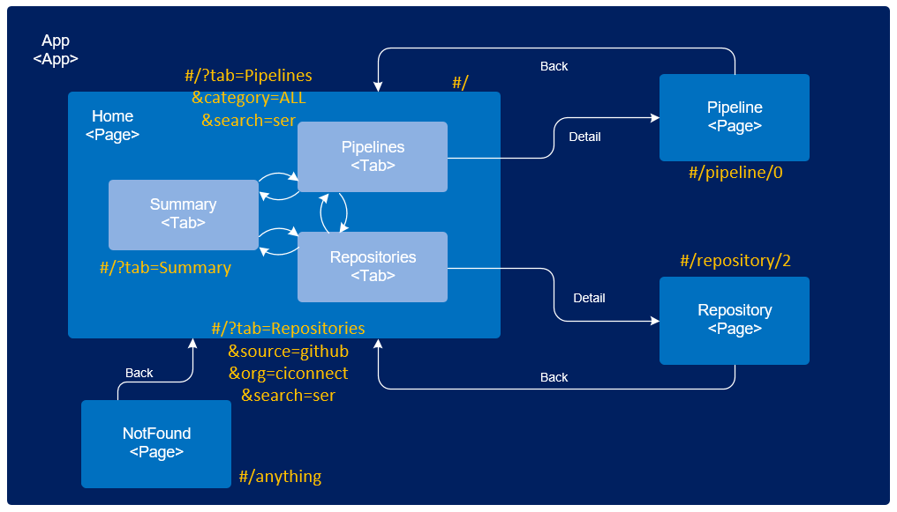

Pipeline Viz PoC
A PoC based on SAPUI5 + Jenkins Blue Ocean on React
Project on Enterprise Github
Tab layout on Cloudfoundry
Side-by-Side layout on Cloudfoundry
SAPUI5
Sophiscated and open MVC framework with rich and well-designed control library
- Easy to extend Control Library: Container, Button, Composite Control ...
- Build-in third-party libraries: jQuery, d3, ...
- Open Icon Pool: octicons, fontawsome, ...
- Open to AMD/UMD: requireJS, react, reactDOM ...
- Open to CommonJS with help of Babel: jenkins-design-language, ...
Blue Ocean
Jenkins next generation of user experience. Link
React
a facebook "V" framework on which Blue Ocean is built

Since it"s only "v", simply write a control wrapper to integrate to UI5 MVC
Challenges
- Different team, different culture
- Understand requirements
- Node JS, React, ES6
- Use ciconnect to automize build and deploy
Requirements
- A Marketplace for Pipelines
- An editable list of repositories, data source from enterprise Github and Git/Gerrit
- Pipeline to Repository assignment
- Easy to Lookup
- Rich Information per Item
Pipelines Marketplace
List of Repositories
+
--
Tile-2-List Assignment - Tab Layout
Pipelines
Repositories
+
--
Selection Status...
Tile-2-List Assignment - Splitter Layout
+
--
Selection Status...
Demo
SAPUI5: Offerings
- Control explorer
- XML Artifacts
- App and Routing
- Layouts: Icontab, Responsive Splitter, Page, Panel etc.
- Tile V.S. List
- Assignment Popovers
- Activation View
- Self-made controls: container, SvgIcon etc.
Control Explorer
Control Explorer is API + demo of SAPUI5 controls Link
XML Artifacts
- View: has corresponding controller
- XMLFragement: only a piece of code, has no dedicated controller
- Can have other flavors, like js view etc.
App and Routing
organization of views- When more and more views are created, they need to be organized. It's time you use App and component for routing
- One extra benefit of routing is bookmarkable view status, like searh results
Tab View Routing
Page
layout for internal structure of a view- Very typical design with a header + a body + a footer
- Build-in support for routing
Panel
layout for view body- Multiple Panel: Stackable body
- Single Panle: layout for toolbar + body
- 'headerToolbar' aggregation to place carousel and toolbar
- 'content' for collection like list or tile
Icon Tab and Splitter
Differnt flavor of layouts- Icon Tab: Switchable views.
- Splitter: Side-by-side views.
Tile v.s. List
| Tile | List | |
|---|---|---|
| Look and Feel | Block | Row |
| Data binding | sufficient | sufficient |
| Selection Support | N.A. yet | sufficient |
Assignment Popovers
Activation View
- A lib with name prefix object page in namespace sap.uxap
- Foldable Rich Page Header and Tabbed and auto scroll formLINK
Self-made Controls
- Pipeline - PoC1 Local Demo
- SvgIcon
- Tile Container and Tile
- BO Control Wrapper
SAPUI5: Useful Links
Run Blue Ocean in SAPUI5
Run Blue Ocean in SAPUI5:
- What is CommonJS AMD and UMD
- AMD plugin of Babel
- CSS Namespace
- BO Control Wrapper Local Code
Project Construction
Build Automation
- Beside the routing packing task, an important task is to generate '/dist' folder automatically in build process
- add '/dist' folder to '.gitignore'
- Register to ciconnect central build service
- Configure in dedicated branch and folder (use a special slave to access outside node module registry)
- May consider to use a configuration file '.npmrc' to access internal module registry to replace the work around
Deploy Automation
- Register to ciconnect central HCP CF deploy service
- Configure in dedicated branch and folder
- Restructure project: move '/dist' folder from root to under '/web' folder. In order to minimize the package to be deployed. manifest.yml
- Deploy as a static buildpack
OData Service Module on NodeJS
- n-odata-server provided by a partner
- odata v2 provided by Gateway team
- odata v4 provided by Gateway team